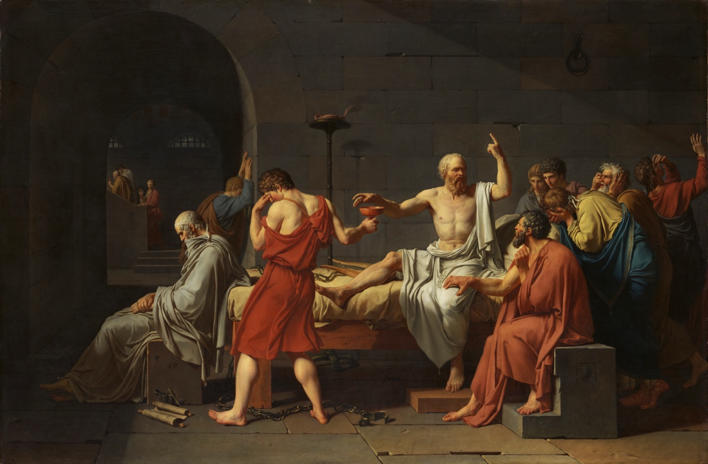

A rule that fails a simple test
Socrates lived in Athens, a city in Greece with its own government and courts. He asked people what made an action right, or courage different from recklessness. Plato, a younger man who learned from him, wrote conversations around these questions. Philosophy here means answering them through reasoning that other people can examine. Socrates and his setting
Early in Plato's Republic, a long conversation about justice, Socrates tests a familiar rule: tell the truth and return what you owe. Suppose a friend leaves weapons with you, then loses his reason and demands them back. Returning them follows the rule. It could also get someone killed. His companion agrees that returning them would be wrong. The rule needs to change. Republic 331c to 331d
Someone offers an answer, Socrates finds a case it would cover, and the person discovers a conflict with another judgment he accepts. They haven't yet found what justice is. They have found that their first answer isn't enough.
These written conversations are called dialogues. Socrates is often the main speaker, but they aren't recordings. The real Socrates left no philosophical books, and other ancient writers give different portraits. We can't reliably separate his beliefs from the ideas Plato gave his character. Plato's way of writing
Socrates makes a respected person's reasoning available for inspection. Plato will ask what follows if some people can learn to reason well enough about right and wrong to govern everyone else.
The questions became a public problem
In 399 BC, an Athenian jury convicted Socrates and sentenced him to death. The charges were corrupting the young, failing to recognize the gods the city recognized, and introducing new divine beings. Religion belonged to public life: the city's worship and its laws were connected. Apology 24b to 28a
Plato's Apology presents Socrates' courtroom defense; apology here means defending yourself. Socrates says young men enjoyed hearing respected people fail to explain their beliefs, then imitated him. Those they embarrassed blamed Socrates. We have this explanation through Plato, but lack the accusers' speeches. Apology 23c to 23e
Craftsmen really knew their trades, he says. Their mistake was assuming that skill made them wise about more important matters too. His advantage is recognizing what he doesn't understand. He also treats his questioning as a duty given by a god. Apology 21b to 23b; 28e to 30a
He says he would refuse an offer of acquittal that required him to stop questioning people. This is a condition he imagines, rather than an offer the jury has made. Daily discussion about becoming a good person is, he says, what makes life worth living: Apology 29c to 29d; 38a
Apology 38a / Benjamin Jowett
“the life which is unexamined is not worth living”
People can live generously without daily philosophical argument. Socrates doesn't establish that their lives have no value. He does risk his own rather than abandon the work he believes gives it value.
Socrates was executed by drinking poison. He claimed to benefit the city that condemned him. The trial alone doesn't prove that philosophers should govern. Plato's case for giving them power needs an argument of its own. The historical trial and its limits

Why Plato invents a city
The Republic asks why being just is good for the person who does it. Justice here concerns living and dealing rightly. Imagine a wrongdoer who gets away with it and enjoys wealth and respect. Set him beside a just person who is wrongly condemned and suffers. Why would the second life still be better? One participant demands an answer that doesn't rely on praise or punishment. Republic 357a to 367e
Socrates proposes looking for justice in a community first, where it should be easier to see, like reading large letters before small ones. The speakers build a city in words, then compare its organization with the motives within one person. The city is invented to investigate the question. Republic 368c to 369b
People produce what the city needs, defenders protect it, and rulers direct it. Plato's proposed justice has each group do its work without taking over the others' functions. Within a person he distinguishes reason, desires such as hunger, and anger or pride that can help resist a temptation. He argues that reason should guide these motives, rather than a desire governing the whole person. Republic 433a to 444a
His answer is that wrongdoing harms the person doing it, even when it pays. Letting the desire for money override judgment about what is right disorders that person's life. In his extreme example, a tyrant, a ruler with unchecked power, controls other people but remains driven by fear and desires he can't satisfy. The just person is better governed within. That is Plato's claim; the comparison between a person and a city doesn't by itself prove it. Republic 577c to 580c
When the speakers ask how such a city could exist, Socrates says political power and philosophical understanding must come together. Its rulers must understand what is good. What education could give someone that understanding? Republic 472c to 473e
The cave is an invented story
Plato explains the education his rulers need by asking us to imagine prisoners kept in a cave since childhood. Their legs and necks are fixed so that they can look only at a wall. Behind them, a fire burns. Between the fire and the prisoners, people carry objects along a low wall. Shadows of those objects fall on the wall the prisoners face. Republic 514a to 515b
They have never seen anything else. They name the shadows and learn to predict them; skill at this earns honors. Echoing voices seem to come from the shadows. They mistake their limited scene for the whole of reality.
One prisoner is released and forced to turn around. The fire hurts his eyes. The objects look less convincing than the familiar shadows. He wants to return to what he understood. Then he is dragged out into daylight, where he can barely see. Gradually he sees shadows and reflections, then objects, then the sky. Finally he can look at the sun and understand its role in this world. Republic 515c to 516c
Plato invents this scene to explain education. It is an allegory: its physical details stand for ideas. Leaving the cave changes what a person takes to be real and worth knowing. It can initially make someone less sure of himself.
When the prisoner returns, his eyes need time to adjust to the darkness. He does badly at the shadow-predicting task. The others conclude that going outside damaged him. If someone tried to release them and lead them up, they would kill that person if they could. The community rewards proficiency at its familiar task and treats a challenge to the task itself as a threat. Republic 516e to 517a
What the daylight stands for
His ruler needs to understand what makes an action just and an aim good. A capable commander might win a war that should never have been fought. Knowing how to achieve something doesn't settle whether it is worth achieving.
Plato distinguishes the changing things we encounter from stable realities he calls Forms. Consider the difference between a circle drawn on paper and the exact circle geometry describes. The drawing has imperfections; reasoning concerns the exact circle. Plato thinks there is a comparable distinction between particular just actions and Justice itself, or beautiful things and Beauty itself. His Forms exist independently of our opinions. They aren't merely words or physical shapes. Republic 476a to 480a; 510d to 511a
The sun in the story represents what he calls the Good. As sunlight makes sight possible, the Good makes truth knowable. He credits it with the existence of the Forms, as well as making them understandable. For a ruler, understanding the Good is supposed to explain what makes other things beneficial and worth pursuing. Republic 505a; 507b to 509b
The existence of a standard doesn't establish that it exists independently of minds. Nor does the sun comparison prove that someone can know the Good. A listener asks Socrates to explain it directly. Socrates says he can't give the account he wants and offers the comparison instead. The reader never receives the full explanation required of the rulers. Republic 506d to 507a
Why the philosophers must go back
Returning means governing. The educated philosophers want to spend their lives understanding what is true and good. Plato regards that as a better life than competing for office, but his city makes them take their turns in government.
Their education is demanding. Candidates are selected for ability and character, study mathematics, learn to question assumptions, and spend years doing practical public work. They must be able to explain the Good and defend their account against objections through argument. Declaring themselves wise wouldn't qualify them. Republic 534b to 540b
The city educated them for everyone's benefit and expects their service in return. Someone who developed the same understanding elsewhere without that support wouldn't owe the same debt. Plato also thinks reluctant rulers are preferable to people who treat power as life's greatest prize. His governing class is forbidden ordinary private wealth, with shared living arrangements intended to prevent public guardians from becoming predators on the people they protect. Republic 519c to 521b; 416d to 417b
Plato wants to prevent able people from using intelligence to serve greed. Their preference for a life outside politics is another protection:
Republic 521a / Benjamin Jowett
“You must contrive for your future rulers another and a better life than that of a ruler”
Understanding more can give someone good advice to offer. Does it give that person the right to decide how everybody else must live? Plato's answer depends on rulers genuinely knowing the community's good. His case requires both that this knowledge exists and that the city can reliably identify who has it.
The Republic makes its prospective rulers answer difficult philosophical objections. It gives the people they govern no equal political power to choose or dismiss them. Its educational tests are designed to find people fit to rule; they don't supply an independent way for the governed to remove someone whose judgment has failed. Plato's political proposal and its difficulties
Text and sources
This reading follows a problem through Plato's courtroom defense of Socrates and the Republic: what knowing right from wrong could qualify someone to do.
The quotations use Benjamin Jowett's English translations. The surrounding explanations are paraphrase and interpretation. References such as 331c use the page and letter divisions of a sixteenth-century edition, called Stephanus references. They identify the same passage across different translations.
- Plato, Apology and Republic, translated by Benjamin Jowett, at the Internet Classics Archive.
- Debra Nails, Socrates, and Richard Kraut, Plato, in the Stanford Encyclopedia of Philosophy, for the people and the limits of their surviving portraits.
- Eric Brown, Plato's Ethics and Politics in the Republic, for the argument connecting justice in a person with government, and the difficulties of that proposal.